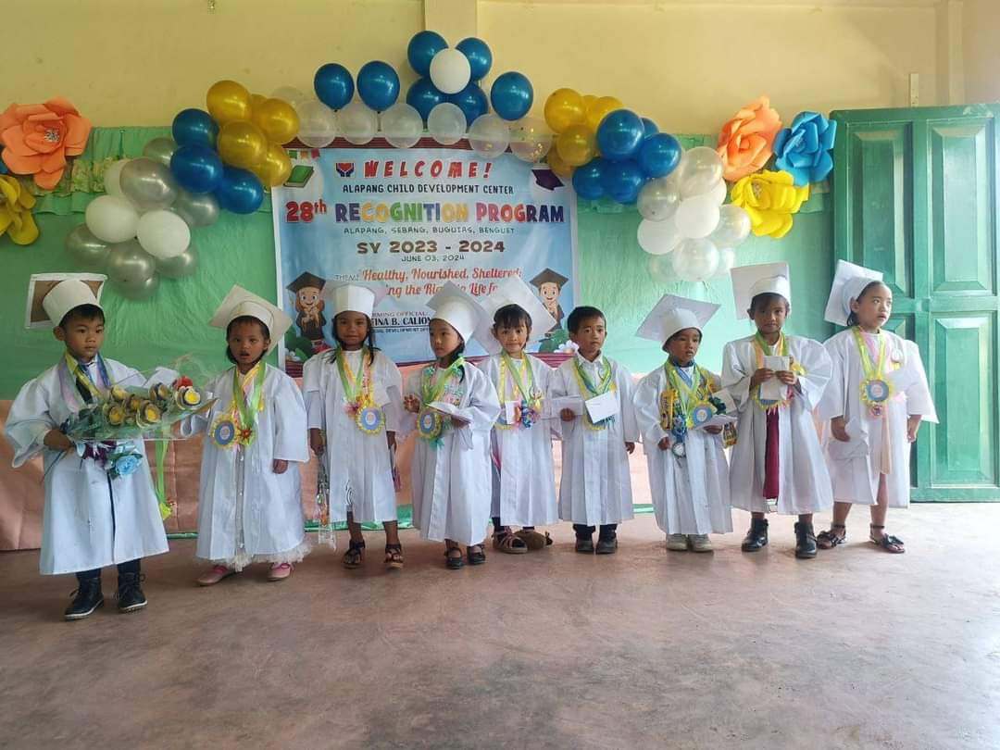

2011-2012
Seb-itan Daycare Center

In daycare, I enjoyed socializing with friends, sharing toys, and following a fun daily routine filled with playtime, learning activities, and naps. The engaging educational activities and games kept me interested, while the safe and clean environment made me feel secure. The caring and qualified staff looked after me, and my parents were always informed about my day through regular updates. It was a place where I could learn, grow, and have fun every day.